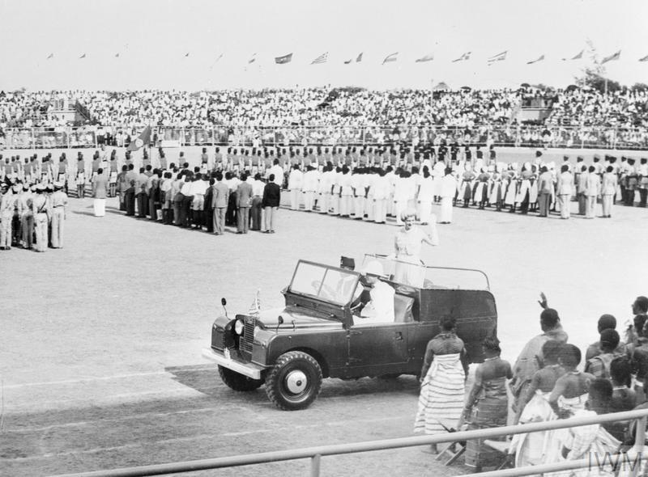

Essential Question
What challenges did newly independent nations face, and did independence deliver what people hoped for?
DECOLONIZATION TIMELINE — 1947 TO 1975
1947
India and Pakistan win independence from Britain; partition violence kills up to 2 million people.
1948
Israel is founded; 700,000 Palestinians are expelled or flee in what Palestinians call the Nakba.
1957
Ghana becomes the first sub-Saharan African colony to gain independence, under Kwame Nkrumah.
1960
17 African nations gain independence in a single year; Patrice Lumumba is assassinated in the Congo.
1962
Algeria wins independence after eight years of brutal war against France.
On March 6, 1957, a man named Kwame NkrumahThe leader of Ghana's independence movement and its first prime minister. stood before a crowd in Accra, Ghana, and announced that after decades of British rule, his country was free. People wept, lifted children into the air, and chanted through the night. The celebration was real. But what came next — for Ghana, for India, for the Congo, for Algeria, for dozens of nations across Africa, Asia, and the Middle East — was far more complicated than any celebration could contain.
On March 6, 1957, Kwame Nkrumah stood before a huge crowd in Ghana and announced that their country was finally free from British rule. People cried and cheered all night. The celebration was real. But what came after independence — for Ghana, India, the Congo, Algeria, and dozens of other countries — turned out to be much harder than people had hoped.
Between 1945 and 1980, over 80 new nations were born as European empires collapsed. It was one of the largest political transformations in human history. But decolonizationThe process by which colonies break free from the countries that ruled them and become independent nations. rarely came peacefully, and the problems the new nations inherited were not ones independence alone could solve.
Between 1945 and 1980, over 80 new nations were created as European empires fell apart. It was one of the biggest changes in history. But decolonization was rarely peaceful, and the new countries faced huge problems that freedom by itself could not fix.
CHAPTER ONE
WHY EMPIRES FELL
Colonial Africa, circa 1913 — nearly the entire continent divided among European powers. The borders were drawn in European capitals with no input from the people who already lived there. Wikimedia Commons.
By 1900, European powers controlled roughly 85 percent of the world's land surface. In 1884, European leaders met in Berlin to divide Africa among themselves. No African leader was invited. The borders they drew were straight lines on a map — clean, geometric, and completely disconnected from the people already living there. These lines split ethnic communities that had existed for centuries and forced longtime enemies inside the same territory. Those borders did not change when independence came.
By 1900, European countries controlled about 85 percent of all land on Earth. In 1884, European leaders met in Berlin to divide Africa. No African was invited. They drew straight-line borders on a map with no regard for the people living there. These lines broke apart communities and forced enemies to share the same country. Those same borders remained when independence arrived decades later.
World War II broke the empires in ways they had not anticipated. The war left Britain, France, and the Netherlands economically ruined — they could no longer afford to police the world. Hundreds of thousands of colonial soldiers had fought and died for their colonizers in Europe, then returned home demanding to know why freedom was for Europeans only. Nationalist movementsOrganized groups of people who fought to make their country independent from foreign control. across Asia and Africa had been growing for decades, and now they had the momentum — and a world that was watching.
World War II weakened the European empires in ways they did not expect. The war left Britain and France broke — they could not afford to control their colonies anymore. Colonial soldiers who had fought for Europe came home asking why freedom was only for Europeans. Nationalist movements — groups fighting for independence — had been growing for years, and now they saw their chance.
Colonial economies made the problem worse. They were built to extract raw materials — cotton, rubber, gold, cocoa, copper — and ship them to European factories. Local industries were kept small on purpose. Schools trained clerks and low-level administrators, not engineers or leaders. When independence came, the new nations inherited economies that still exported raw materials to the same countries that had just colonized them. Being politically free did not automatically mean being economically free — a pattern called neo-colonialismWhen a country is officially independent but its economy is still controlled by wealthier foreign nations..
Colonial economies were also a problem. They were designed to help Europe, not the people in the colonies. Crops and minerals were exported to European factories. Schools trained people for low-level government jobs, not to run a country. When independence came, new nations were still economically tied to the same countries that had ruled them. This is called neo-colonialism: being politically free but economically still controlled from outside.
Real-world connection: The borders drawn by colonial powers in the 1800s still define the countries of Africa and the Middle East today — including many of the conflict zones students see in the news.
Real-world connection: The borders drawn by Europeans in the 1800s still shape the countries and conflicts students see in the news today.
DID YOU KNOW
The 1884 Berlin Conference — Africa divided without a single African in the room.
The 1884 Berlin Conference lasted only three months, but the borders drawn in that room lasted more than a century. Of the 54 countries in Africa today, the vast majority still use boundaries created at that meeting. Not one African person was present when it happened.
CHAPTER TWO
INDEPENDENCE AROUND THE WORLD
Refugees during the 1947 partition of India and Pakistan. An estimated 10 to 20 million people were displaced; up to 2 million were killed in communal violence. Wikimedia Commons.
India's independence in 1947 was a moment decades in the making — but it came paired with something devastating. Britain divided its colony into two nations: Hindu-majority India and Muslim-majority Pakistan. The logic was to separate communities that officials claimed could not coexist. The result was catastrophic. Between 10 and 20 million people were forced to move in a matter of weeks. Up to 2 million were killed in communal violence as Hindus, Muslims, and Sikhs attacked each other across the new border. PartitionDividing a territory into two or more separate countries, often along religious or ethnic lines. created two new nations — and destroyed millions of old lives at the same time.
India became free from Britain in 1947, but independence came with a terrible cost. Britain split the colony into two countries: India for Hindus and Pakistan for Muslims. Between 10 and 20 million people had to flee their homes in just a few weeks. Up to 2 million people were killed as communities attacked each other across the new border. Partition created new countries and destroyed millions of lives at the same time.
Patrice Lumumba, the Congo's first elected prime minister, 1960. He was assassinated within months of independence, with documented CIA and Belgian involvement. Wikimedia Commons.
In 1960, Ghana inspired Africa — but the Congo showed the dangers waiting for newly independent nations. Belgium had deliberately kept Congolese people out of higher education, so when independence arrived in June 1960, the country had almost no trained doctors, lawyers, or senior officials. Patrice LumumbaThe Congo's first elected prime minister, assassinated in 1961 with CIA and Belgian involvement., the Congo's first elected prime minister, faced an immediate military mutiny and a secessionist crisis in the mineral-rich Katanga province. When he asked the Soviet Union for help, the United States labeled him a communist threat. The CIA organized his removal, and within months of independence, Lumumba was captured and executed. His assassination was a defining example of Cold War interferenceWhen the United States or Soviet Union intervened in other countries' politics to control outcomes in the Cold War competition. in the decolonizing world.
In 1960, the Congo became free from Belgium, but not for long. Belgium had kept Congolese people out of schools and leadership on purpose, so there were almost no trained leaders when independence arrived. Prime Minister Patrice Lumumba quickly faced a military rebellion. When he asked the Soviet Union for help, the United States called him a communist enemy. The CIA helped remove him from power, and within months of independence, Lumumba was captured and killed. His murder showed how Cold War competition was destroying new nations before they had a chance to survive.
In Algeria, France did not treat independence as possible at all. French leaders insisted Algeria was not a colony — it was part of France itself. When Algerians launched an armed uprising in 1954, France responded with overwhelming military force, including the systematic use of torture against suspected rebels. The Algerian War lasted eight brutal years. Estimates suggest between 300,000 and 1.5 million Algerians died. France withdrew in 1962, but the war showed the world exactly how far colonial powers would go to hold what they had taken.
In Algeria, France refused to let go. French leaders said Algeria was part of France, not a colony. When Algerians started fighting for independence in 1954, France used torture, napalm, and prison camps to stop them. The war lasted eight years and killed hundreds of thousands of Algerians. France finally left in 1962. The Algerian War showed how brutal a colonial power could be when it refused to accept independence.
FAST FACTS
THE SCALE OF DECOLONIZATION, 1945–1980
80+new nations created during the decolonization era — more than in any other period in recorded history
2Mpeople killed in communal violence during the 1947 partition of India and Pakistan alone
17African nations that became independent in 1960 alone — a year so historic it is called "The Year of Africa"
700KPalestinians forced from their homes in 1948, an event Palestinians call the Nakba — Arabic for "catastrophe"
CHAPTER THREE
BROKEN PROMISES
David Ben-Gurion declares the State of Israel, May 14, 1948, beneath a portrait of Theodor Herzl. On the same day, Arab states attacked; 700,000 Palestinians fled or were expelled. Wikimedia Commons.
The conflict in Palestine showed how decolonization could mean different things to different peoples at the same time. Jewish survivors of the Holocaust poured into Palestine after World War II, seeking a homeland after six million Jews had been killed in Europe. In 1948, the State of Israel was declared. Arab states immediately invaded and lost. In the fighting, approximately 700,000 Palestinians were expelled from or fled their homes — an event Palestinians call the NakbaArabic word meaning "catastrophe" — the 1948 displacement of Palestinians during the Arab-Israeli War.. For Jewish survivors of genocide, Israel was liberation. For Palestinians, it was catastrophe. The conflict between these two peoples — rooted in the same geography, shaped by European colonialism and the Holocaust — has never been resolved.
In Palestine, the story of decolonization was especially complicated. Jewish survivors of the Holocaust came to Palestine after World War II looking for safety. In 1948, Israel declared independence. Arab countries attacked and lost. During the war, about 700,000 Palestinians were forced from their homes — an event Palestinians call the Nakba, meaning "catastrophe." For Jewish Holocaust survivors, Israel was freedom. For Palestinians, it was disaster. This conflict, shaped by European colonialism and World War II, has continued ever since.
Nearly every newly independent nation also had to navigate the Cold WarThe tense political and military competition between the United States and Soviet Union from 1945 to 1991. — a global competition that treated new nations as pieces to be moved, not countries with the right to choose their own path. The CIA helped overthrow elected governments in Iran (1953), Guatemala (1954), and the Congo (1960). The Soviet Union did the same on its side. Leaders who made choices the superpowers disliked were removed, imprisoned, or killed. Self-determinationThe idea that people have the right to choose their own government and control their own country. — the principle the independence movements had fought for — ran directly into geopoliticsThe way powerful countries use global strategy and geography to advance their own interests..
Almost every new nation also faced the Cold War. The United States and the Soviet Union were competing to control as much of the world as possible. New countries that made choices the superpowers did not like were punished. The CIA overthrew elected governments in Iran, Guatemala, and the Congo. The Soviets did the same elsewhere. The freedom that independence movements had fought for was constantly threatened by powerful countries with their own interests.
Soldiers during a military coup in Africa, 1960s. Between 1960 and 1980, at least 30 coups overthrew elected governments across newly independent African nations. Wikimedia Commons.
Military coups became one of the defining patterns of the decolonization era. Between 1960 and 1980, at least 30 military governments replaced elected ones across Africa alone. The reasons repeated everywhere: colonial powers had built armies designed to suppress people, not protect democracy. Civilian governments were new and fragile. Economies were struggling. When a crisis hit — and a crisis always hit — the military stepped in. Sometimes a Cold War superpower was quietly involved. The result was the same everywhere: the democratic promise that people had fought and died for was erased, often within years of independence. Even Ghana — the symbol of everything possible — lost Nkrumah to a coupWhen the military takes over a government by force, removing elected leaders. in 1966 while he was traveling abroad.
Military coups were another pattern that repeated everywhere. Between 1960 and 1980, at least 30 military governments overthrew elected ones in Africa alone. Colonial armies were trained to control people — not to protect elections. New civilian governments were fragile. Economies were struggling. When a crisis hit, soldiers took over. Sometimes a Cold War superpower quietly helped. Even Ghana — the symbol of African independence — had Nkrumah removed by his own military in 1966. The democratic future that people had fought for disappeared again and again.
Independence did deliver real things. Schools, hospitals, and universities were built. Cultural traditions that colonialism had suppressed were revived. The United Nations grew from 51 members in 1945 to over 140 by 1975, giving formerly colonized nations a voice in world affairs for the first time. The simple fact of governing oneself — making one's own mistakes, flying one's own flag — mattered enormously to people who had spent their entire lives under foreign control. Independence was not everything people had hoped. But it was not nothing.
Independence did bring real gains. New schools, hospitals, and universities were built. Languages and traditions that colonialism had suppressed came back. The United Nations grew as more countries joined. New nations had a voice in world affairs for the first time. And the simple fact of governing yourself — making your own decisions — mattered deeply to people who had never had that before. Independence was not everything people dreamed of. But it was not nothing, either.
Real-world connection: Many of the conflicts that look like "civil wars" or "ethnic conflicts" in today's news are rooted in colonial borders, Cold War interference, and economic systems inherited from the decolonization era.
Real-world connection: Many conflicts in today's news are rooted in the colonial borders, Cold War interference, and economic problems left over from the decolonization era.
ART SPOTLIGHT
Toussaint L'Ouverture Series, Panel 36 — Jacob Lawrence, 1938
Lawrence painted this 41-panel series documenting the Haitian Revolution leader Toussaint L'Ouverture at age 21. The series is held in the Amistad Research Center in New Orleans.
Lawrence painted the entire Toussaint series using only four colors — black, white, red, and yellow — because he could not afford more paint. The limitation became a visual signature: the same four colors, used in dozens of variations, gave the series a unity that art critics later called one of the most powerful examples of storytelling through constraint in 20th-century American art.
PRIMARY SOURCE MOMENT
Kwame Nkrumah, circa 1957. Wikimedia Commons.
"We have awakened. We will not sleep anymore. Today, from now on, there is a new African in the world. That new African is ready to fight his own battles and show that after all, the black man is capable of managing his own affairs. We are going to demonstrate to the world, to the other nations, that we are prepared to lay our own foundation."
— Kwame Nkrumah, Independence Address, Accra, Ghana, March 6, 1957
WHY THIS MATTERS: Nkrumah is not only celebrating freedom from Britain. He is directly challenging the racist argument that had justified colonialism for centuries — that non-European peoples needed European guidance to govern themselves. Notice what he is promising: not just independence, but proof. As you read this, consider: what specific promises does Nkrumah make? And given what happened in the Congo, in Algeria, in Ghana itself — how would you judge whether independence delivered what he described?
THEN AND NOW
THE BORDERS AND PROBLEMS CREATED BY COLONIALISM ARE STILL HERE — BUT SO IS THE RESISTANCE THAT FOUGHT AGAINST THEM.
1957

Nkrumah at Ghana's independence ceremony, 1957. Wikimedia Commons.
NOW
African heads of state at a recent African Union summit — independent nations choosing their collective future. Wikimedia Commons / CC.
THEN
In 1957, Nkrumah stood before a crowd in Accra and promised that Africa would prove itself. He was speaking to his own people — and to the colonial world watching. The independence celebration was a declaration: that the argument used to justify colonialism was a lie, and that African nations would govern themselves.
NOW
Today, 55 African nations send representatives to the African Union, a continental organization that coordinates political, economic, and security decisions entirely on African terms. Its existence would have been unimaginable when European powers were dividing the continent at the Berlin Conference in 1884.
CONNECTION
The problems that decolonization left behind — colonial borders, extracted economies, Cold War interference, fragile governments — did not disappear with independence. Many are present in today's headlines. But what also continued was exactly what Nkrumah represented in 1957: the determination that people have the right to govern themselves, and the willingness to keep fighting for it. The work his generation started is still unfinished.
When you think about India, the Congo, Algeria, and the dozens of other nations that became free and then faced coups, Cold War manipulation, and economic dependency — what would you say is the most important thing the decolonization era proved?